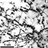

�Perfection has one grave defect : it is apt to be dull�
William Somerset Maugham
The
behaviour of materials is often dominated, much like people, by their
defects.� Early theoretical predictions suggested metals should be many
times stronger than they actually are, and arguments raged for some
time as to whether the calculations were flawed or not.� The paradox
was only resolved in 1935 when it was realised that real metals are
not perfect crystals but instead are riddled with dislocations,
defective ripples in the crystal lattice that allow the material to
bend and flex in the way that metals do.
However
defects don�t only weaken materials.� Commercial silicon used in microchips
is grown from large vats of liquid silicon, but the silicon attacks
and gradually dissolves the silica vats.� Hence the silicon produced
contains lots of dissolved oxygen impurities.� These impurities can
scatter electrons and generally detract from the electrical properties
of �perfect� silicon, but they also contribute something, namely strength
� you can crumble �perfect� silicon between your fingers.
And sometimes, defects might be just what
you need.� Components on chips such as diodes and transistors are formed
by doping the silicon to introduce a local excess or reduction
in electrons � doping is just the deliberate introduction of impurities
with the electrical properties that you require.
�In all science, error precedes truth, and it is better
it should go first than last�
Hugh Walpole
Defect physics is one area of science where Hugh gets
it back to front!� Early modelling of new materials generally concentrates
on a �perfect� model of the material, simply because that�s the easiest
place to start.� It�s only later in the day that the defects and imperfections
get a look in, yet they are often the things that control the material
properties.
Early modelling of the exciting new nanostructures
emerging in carbon science largely focussed on the properties of ideal
carbon tubes and cages.� It�s only more recently that we�ve begun to
examine the effect of defects in the lattice such as missing atoms,
unusual bonding, and even deliberate doping with impurity atoms.� These
calculations are revealing strange and unexpected results.� It is known
experimentally that most of these nanostructures are riddled with defects,
as we now have sufficiently powerful microscopes that we can actually
see them.� Now is the time for theory to catch up and study these defects,
so that we can not only learn to live with them, but also learn to use
them to their best advantage.
|